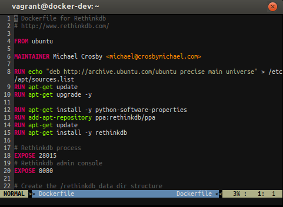

Vim
The default editor is Vim. Vim is configured with a couple of plugins like syntax checking for Dockerfiles and git integration.
Vim Plugins
Vundle is used for managing the plugins.
Following plugins are installed:
- fugitive.vim: Git wrapper
- Dockerfile.vim: Vim syntax file for Docker's Dockerfile
- Tabular.vim: Vim script for text filtering and alignment
- vim-markdown: Syntax highlighting, matching rules and mappings for the original Markdown
- vim-json: A better JSON for Vim
- vim-airline: lean & mean status/tabline for vim that's light as air
Screenshots
Dockerfile

Markdown